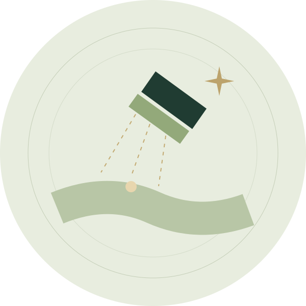

OUR CARE / LASER HAIR REMOVAL
Less guesswork.
A considered approach.
A laser consultation helps you understand whether treatment is appropriate for your skin, hair and goals before you decide to proceed.
Discuss laser hair removal ↗
DOCTOR-LED CARE · DR. KEYUR CHOVATIYAYOUR CONSULTATION
What to expect.
- Discuss your skin and hair, medical history and previous hair-removal methods.
- The doctor will explain suitability, preparation, possible risks and the expected course.
- More than one session may be needed. Maintenance and individual results vary.
A LITTLE PREPARATION
Before you visit.
- Ask the clinic for preparation instructions before any session.
- Tell the doctor about medicines, recent tanning and any skin reactions.
- Follow the aftercare provided. Temporary redness or swelling can occur; discuss risks with your doctor.
Read the first-visit guide ↗